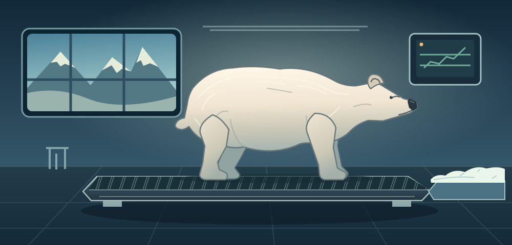
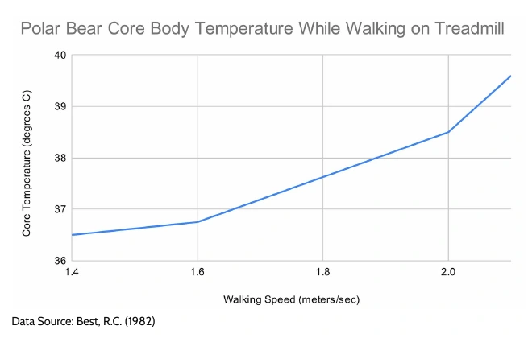

Arctic field station · Unit 5 · Lesson 2
Bear Thermoregulation Lab
Could overheating help explain why a polar bear gives up food to a brown bear?
Field notebook
Who gives up the food?
In Lesson 1, the Wapusk sightings showed where bears were reported. Now examine what bears actually did when they shared a food source at a different site.
Open the field cases
Lab evidence · Best, 1982
What changes when the bear walks faster?
Thermoregulation means keeping body temperature in a workable range. Scientists studied two trained polar bears indoors; the values here are from one bear. The treadmill was stopped at 40°C when the bears showed heat stress. That is the study’s stopping point, not a temperature reading for each row in the table.
Watch the Oregon Zoo treadmill clip
This video shows what a bear treadmill looks like. It is not footage from Best’s study.
Open on YouTube
| Speed (m/s) | Time on (min) | Time off (min) | Breaks |
|---|

The horizontal axis is walking speed, not elapsed time. The vertical axis is temperature inside the bear. The graph and the break table show different measurements. Graph reproduced from OpenSciEd’s Lesson 2 handout (CC BY-NC 4.0); source data: Best (1982).
Classroom investigation · 0–8 min
Compare a human cooling response
Enter your teacher-supervised class readings, or load a practice example. The handheld infrared thermometer measures surface temperature. The bear’s implanted sensor measured core temperature. Compare the patterns and cooling responses, not the absolute values. The practice readings are invented, not research data.
| Time (min) | Participant A | Participant B (optional) |
|---|
A: circle and solid line. B: square and dashed line. Blank readings are not plotted.
Matter & energy workbench
Follow the matter and energy
Drag each card to its place, or select it and then select a destination. Glucose and oxygen take part in cellular respiration. Muscle cells transfer some energy to a usable form and release some as heat.
Work stays in this browser. Preview your report to keep a copy.